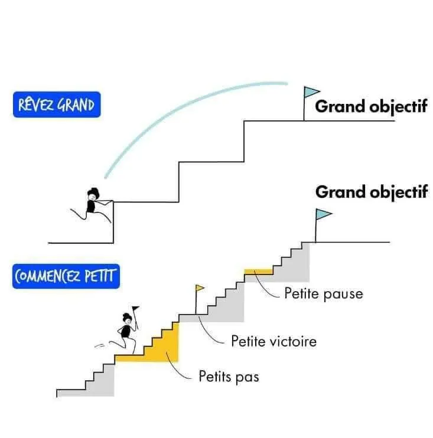

Accueil › Le parcours de formation
Le parcours de formation
Une école du leadership public en cinq niveaux : une progression structurée, mesurable et fondée sur le mérite.
Monter marche après marche
Environ vingt sessions de formation jalonnent le parcours complet. À chaque niveau, le membre gagne en responsabilités : il apprend, puis organise, puis forme, puis encadre.
Chaque niveau comprend une formation adaptée, des activités pratiques ou des défis, une évaluation des compétences et une distinction en fin de niveau.

Du membre au mentor
Membre
Ce premier niveau permet au membre de découvrir la vision, les valeurs et les objectifs du REFL-CI. Il constitue la porte d’entrée dans le réseau et pose les bases du développement personnel et du leadership. Le membre apprend à mieux se connaître, à comprendre l’importance du service aux autres et à adopter une attitude positive dans son environnement professionnel et social.
Philosophie : apprendre à servir et à apporter de la valeur aux autres.
Acteur
À ce niveau, le membre devient un participant actif à la vie du réseau. Il développe ses relations, s’implique dans les activités et apprend à travailler avec les autres pour réaliser des projets communs. Il comprend que le leadership repose aussi sur la qualité des relations humaines, l’écoute et la capacité à influencer positivement son entourage.
Philosophie : créer des relations utiles, s’engager et exercer une influence positive.
Leader
Ce niveau vise à développer la capacité à prendre des initiatives, à assumer des responsabilités et à obtenir des résultats concrets. Le membre renforce ses compétences, son autonomie et son sens de l’engagement. Il apprend à transformer les idées en actions, à relever les défis et à incarner les valeurs du REFL-CI dans sa vie professionnelle et citoyenne.
Philosophie : passer de la participation à l’action et produire des résultats.
Expert
L’Expert se distingue par ses compétences, son expérience et sa capacité à partager ses connaissances. Il ne se contente pas de réussir individuellement : il accompagne les autres, transmet son savoir-faire et contribue à leur progression. Il apprend également à guider les membres, à encourager l’autonomie et à aider chacun à trouver sa place pour avoir un impact positif dans la société.
Philosophie : exceller, transmettre son savoir et faire grandir les autres.
Mentor
Ce niveau représente l’aboutissement du parcours tutoriel. Le Mentor met son expérience au service de l’accompagnement et de la transformation des autres membres. Il aide les futurs leaders à concrétiser leurs projets, à développer leur potentiel et à devenir autonomes. Son influence repose autant sur ses compétences que sur ses valeurs, son comportement et l’exemple qu’il donne.
Philosophie : transmettre, accompagner et pérenniser les valeurs du leadership.
Comment on passe au niveau suivant
La validation d’un niveau est conditionnée par la participation obligatoire aux activités suivantes :
- La participation aux quatre sessions de formation du niveau concerné ;
- La participation à au moins une action citoyenne ;
- La participation à une activité sportive et culturelle ;
- La participation au dîner-gala de remise des parchemins.
Le passage d’un niveau à l’autre traduit ainsi l’engagement du membre dans sa formation, sa participation aux activités du réseau et sa volonté de progresser pour devenir un fonctionnaire leader, utile à son administration, à ses concitoyens et à la nation.
Un départ commun
Tout nouveau membre débute obligatoirement au premier niveau et passe successivement par tous les niveaux.
Quatre sessions par an
Chaque niveau correspond à une année de quatre sessions de formation, sur des thèmes différents. La présence est enregistrée à chaque session.
La validation de l’année
Après la quatrième session et l’examen des rapports, l’année est validée par les instances du réseau. Elle ouvre l’inscription au niveau suivant.
Des acquis conservés
Les sessions déjà validées ne sont jamais perdues : un membre qui n’a pas terminé son année les conserve et complète les sessions manquantes.
Un parchemin par niveau
Le passage au niveau supérieur est certifié par la remise du parchemin de fin de niveau, lors du dîner gala organisé par le comité régional ou local.
Les actions citoyennes
Le membre participe aux actions citoyennes de sa région : salubrité, solidarité, embellissement d’édifices publics.
Les activités socioculturelles
Le membre participe aux journées sportives et culturelles, régionales et nationale, qui font la cohésion du réseau.
Le dîner gala de remise de parchemin
La participation est obligatoire, en personne ou en se faisant représenter. La contribution est due même en cas d’absence.
Un engagement global
La progression tient compte de la participation effective aux formations, des compétences acquises, de l’implication dans les activités et du respect des valeurs du réseau.
Ce que coûte le parcours
Le réseau ne pratique aucune cotisation mensuelle ou annuelle. Ses ressources proviennent du droit d’adhésion, payé une seule fois, et des droits d’inscription à chaque niveau.
| Droit | Montant |
|---|---|
| Droit d’adhésion · payé une seule fois | 5 000 F |
| Droit d’inscription par niveau | Montant |
|---|---|
| Niveau 1 · Membre | 15 000 F |
| Niveau 2 · Acteur | 20 000 F |
| Niveau 3 · Leader | 25 000 F |
| Niveau 4 · Expert | 30 000 F |
| Niveau 5 · Mentor | 30 000 F |
Montants en vigueur, révisés par décision des instances du réseau.
Dîner gala de remise de parchemin : contribution obligatoire, même en cas d’absence. Son montant est fixé par le comité exécutif régional ou local, sans pouvoir dépasser 15 000 F par membre (article 16 du règlement intérieur).
Dîner gala du mérite et de l’excellence : participation facultative et payante, ouverte à tous. Montant communiqué ultérieurement.
Membres et participants
Les fonctionnaires : membres
Tout fonctionnaire jouissant de ses droits civils peut adhérer. Il paie son droit d’adhésion, s’inscrit au parcours et devient membre actif du réseau.
Les non-fonctionnaires : sympathisants
Les personnes qui ne sont pas fonctionnaires peuvent participer aux formations en qualité de sympathisants, sans suivre le parcours de niveaux.
- Leadership et management public
- Communication et prise de parole en public
- Art oratoire
- Gestion des conflits et médiation
- Protocole, éthique et déontologie administrative
- Développement personnel, confiance en soi et intelligence émotionnelle
- Entrepreneuriat
- Intelligence artificielle
Prêt à gravir la première marche ?
L’inscription au premier niveau, « Membre », est ouverte à tous les fonctionnaires.